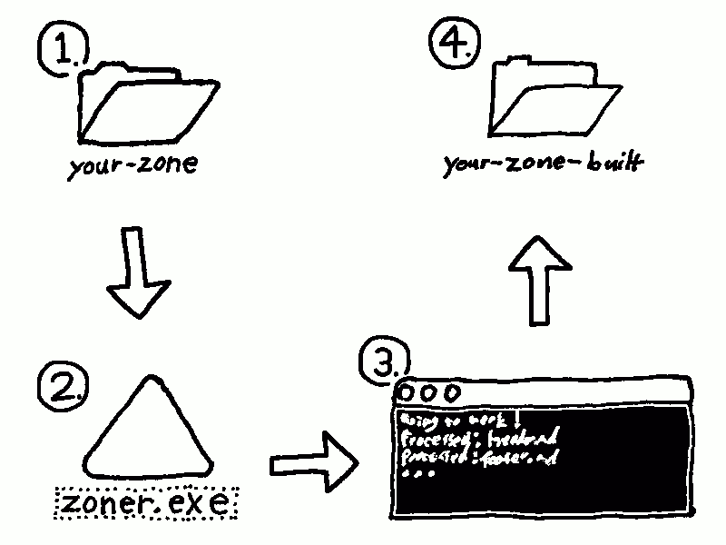

Welcome to Zoner!
Zoner is a drag and drop static site generator for making Zonelets-style blogs!
Why?
I wanted to start writing my own blog, but I couldn't figure out how to use other static site generators like Jekyll. I found Zonelets and it seemed like the perfect choice, but after making websites for years I didn't want to mess with html or javascript files in my off-time. So I made this little console application to generate Zonelet blogs from Markdown files.
This allows you to keep your source separate from your built site, in case you want source control for versioning of your writing. It also allows for a true static website, so older browsers without javascript and people with slow internet can still read it at blazing fast speeds.
But mainly this tool exists for: making your Zonelet more maintainable, writing blog posts quicker and easier, and keeping the site style consistent across pages.
How?

Features?
- A super simple workflow for making beautiful blogs.
- HTML optimized for screen readers.
- Automatic RSS feed generation.
- Disqus comment support.
- Backwards compatability with existing Zonelets.
- Open source, MIT, easy to extend or chain into existing workflows.
Where can I get it?
You can download it from itch.io!
Recent Posts:
Zoner is not affiliated with the official Zonelets. Consider it software fan art.